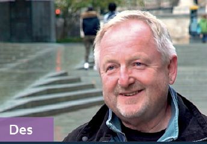
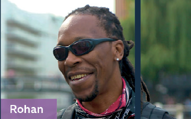
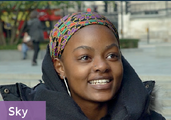
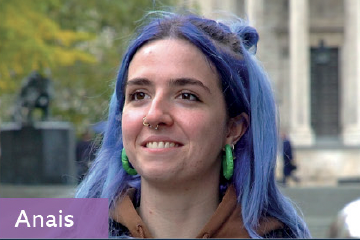
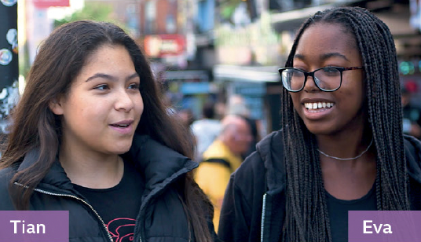

Unit 3 · Lesson C–D
Negative Prefixes
& This or That?
& This or That?
Vocabulary · Grammar · Speaking · Writing
3
W
Warm-up — This or That?
speaking▼
Quick fire round — answer without thinking too long!
📱 Call or text?
🌙 Night owl or early bird?
🎧 Music or silence when you work?
🏖️ Beach holiday or city trip?
📺 Binge a series or watch one episode a week?
🌧️ Rain or extreme heat?
📚 E-book or real book?
✈️ Window or aisle seat?
Follow-up: Pick one of your answers and explain it in 2–3 sentences. Use: I'd much rather… / I prefer… because… / I can't really explain why, it just suits me more.
3C
Vocabulary — Negative Prefixes
vocabulary▼
1A Add the prefix to make the adjectives negative. Use in-, ir- or un-.
- appropriate
- certain
- clear
- confident
- dependent
- employed
- enthusiastic
- expensive
- fair
- flexible
- formal
- healthy
- lucky
- necessary
- popular
- professional
- regular
- responsible
- sensitive
- willing
1 inappropriate · 2 uncertain · 3 unclear · 4 unconfident · 5 independent · 6 unemployed · 7 unenthusiastic · 8 inexpensive · 9 unfair · 10 inflexible · 11 informal · 12 unhealthy · 13 unlucky · 14 unnecessary · 15 unpopular · 16 unprofessional · 17 irregular · 18 irresponsible · 19 insensitive · 20 unwilling
2 Choose the correct words to complete the rule.
We usually stress / don't stress the negative prefix.
We usually don't stress the negative prefix. The stress stays on the main word: unFAIR, irREGUlar.
3 Complete the sentences using a word with a negative prefix from Ex 1A.
- He doesn't want to do it. He's to do it.
- I don't have any work at the moment. I'm .
- That wasn't the right thing to say in that situation. It was totally .
- You really don't handle change well, do you? You're really .
- You didn't need to do that. It was .
- It was gorgeous weather all summer except on your wedding day. That's a bit .
- He used to be everyone's favourite politician, but now he's really .
- I'm not sure what will happen next year. I'm about my future.
- There's no need to dress up. You can wear clothes.
- I suggested a party, but no one seemed very interested. They were .
- They left their young kids home by themselves. That's completely .
- I don't understand everything she says. She's very .
1 unwilling · 2 unemployed · 3 inappropriate · 4 inflexible · 5 unnecessary · 6 unlucky · 7 unpopular · 8 uncertain · 9 informal · 10 unenthusiastic · 11 irresponsible · 12 unclear
3D
BBC Street Interviews — This or That?
new topic▼
BBC
This or that?
▌ PREVIEW
1 Answer the questions.
1 What did you want to be when you were growing up?
2 Look at the jobs in the box. Which ones would suit you most now? Which would suit you least? Why?
actorastronautastronomerdoctorelectricianfashion designerfootballerlawyermusicianphotographer
▌ VIEW

Dara

Monica
2 Watch the first part of the video. How many speakers talk about more than one job? Who wanted to work in something connected to sports or entertainment?

Des

Rohan

Sky
Daniel

Anaïs

Tian & Eva
3A Watch the second part of the video. Which job does each speaker prefer?
- Dara
- Monica
- Des
- Eva
- Tian
- Daniel
- Sky
- Rohan
- Anaïs
1 a teacher · 2 environment/climate · 3 author (write books) · 4 doctor · 5 working with people · 6 own research · 7 outside/nature · 8 photography · 9 cool stuff/things
3B Complete the things that the speakers say. Then watch and check.
- Dara: I like and I'm quite used to working with .
- Monica: I'm very interested with what's happening with the .
- Des: I think I could reach more by writing books and I could work from .
- Eva: I don't like with people.
- Tian: I like with people.
- Daniel: I do my own and I really enjoy it.
- Sky: I like being outside in .
- Rohan: I love and I would love to share a good as well.
- Anaïs: I think it would just be pretty cool to make some cool .
GR
Grammar — Expressing Preferences
grammar▼
Expressing preferences
| Structure | Example |
|---|---|
| I'd prefer + infinitive | I'd prefer to be a journalist. |
| I'd rather + bare infinitive | I'd rather be a teacher. |
| I'd go for + noun | I'd definitely go for writing. |
| I had rather (formal) | I had rather be a teacher. |
⚠️ I'd rather + bare infinitive (no to) · I'd prefer + to + infinitive
4A Choose the correct words to complete the sentences.
- I'd prefer / rather be a journalist.
- I would / had rather be a teacher.
- I'd prefer / rather to be a farmer.
- I'd definitely be for / go for an author.
1 rather · 2 would · 3 prefer · 4 go for
S
Speaking — 'This or That?' Questions
speaking▼
Key Phrases
- I'd much rather / prefer to …
- I'd prefer to …
- I'd go for …
- I can't really explain why.
- I've always wanted to …
- It just suits me more.
- I wish I had that choice.
- If I had to choose, I would say …
5A Look at the 'This or That?' questions. Write a full question for each one.
Example: Dentist or vet? → Which would you rather be, a dentist or a vet?
Student A
🍬 Sweet or salty?
🏕️ Hotel or campsite?
🏊 Swimming pool or lake?
📱 E-book or real book?
🦸 Be able to fly or be able to disappear?
Student B
🚿 Shower or bath?
🏠 Apartment or house?
🚲 E-bike or real bike?
👤 Alone or in a big group?
✈️ Travel by plane or by boat?
6 Ask and answer more 'This or That?' questions. Use the Key Phrases in your answers.
City or country? · Cats or dogs? · Mountain or beach? · Chocolate or vanilla?
WR
Writing — A Discussion Board Post
writing▼
7A Read the comments on a website. Which replies do you agree with the most?
Driver or passenger?
Which do you prefer?
User 1
I'd much rather drive than be a passenger. I get bored when I'm a passenger, and to be honest I don't like the way most people drive. I suppose I like to be in control.
User 2
Passenger. I much prefer looking out of the window at the scenery to staring at the road ahead of me. How much nicer to relax and watch the world go by. Driving actually makes me nervous, because I don't feel free to look around.
User 3
I drive for a living — I'm a taxi driver — so I feel pretty strongly about being the one in control. Driving is a big responsibility, and people see it as a game, like they don't have to concentrate. I'm extremely uncomfortable in a car with a driver like that. So I'd always choose to be the driver.
User 4
That's easy, because I don't have a choice. I want to learn how to drive, but it's too expensive, so I'm always the passenger. If I had the choice, I'd go for being the driver, but only because it would be a nice change for me.
7B Write a 'This or That?' question of your own. Then write your answer and give reasons.
entertainmentfood and drinktravel